Engineering report · replication of NASA TM‑100991 · generated from the current report.json
A component-level model of the General Electric T700‑GE‑700 turboshaft and its complete fuel control, rebuilt in Python from Ballin’s 1988 real-time simulation and measured against every number the report prints.
Ballin had to run a component-level thermodynamic engine model in real time on 1988 hardware, at a time step of at most 10 ms [pdf p.38], while a pilot flew a helicopter around it. The replication reproduces both the model and the compromises that made it real-time: where the report is dated or arguably wrong, it is reproduced as written and the objection recorded.
The 5-state model Appendix B linearizes cannot be integrated at the report’s frame time. Table 1 puts its fastest mode at −4900 /sec [pdf p.31], so explicit integration is stable only below about 0.4 ms; the report runs at 7 ms. Ballin therefore makes the three pressures algebraic and solves them within the frame: an opened compressor mass-flow iteration that carries one flow across the frame boundary (Eq. 74), a Gauss–Seidel sweep for P3 and P41 (Eqs. 76, 78), and an independent solve for P45 (Eq. 80). Only NG and NP, at least three orders of magnitude slower, are integrated.
That is what the Conclusions mean by “The modeling of high-speed dynamics which represent changes of mass flow between the internal control volumes was found to be unnecessary” [pdf p.54]: those dynamics are the fast modes.
What the engine does across the range the report declares it valid over; nothing here is compared with reference data.
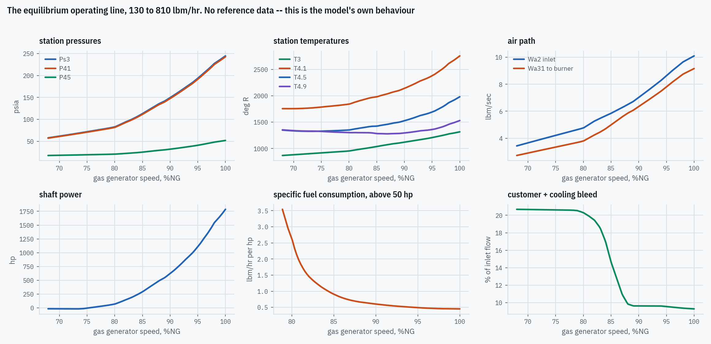
| Quantity | Range | |
|---|---|---|
| Gas generator speed | 68.0 – 100.0 %NG | the report claims validity to 100 %NG and no further |
| Fuel flow | 130 – 806 lbm/hr | the trim ladder's own span |
| Shaft power | -17 – 1,786 hp | crosses zero at 75.28 %NG — the free turbine absorbs below that |
| Compressor pressure ratio | 3.93 – 16.65 : 1 | Ps3 over ambient, sea-level standard day |
| Turbine inlet T4.1 | 1,755 – 2,755 °R | rises with fuel flow along the whole line |
| Customer + cooling bleed | 9.28 – 20.68 % | falls as speed rises; the seal bleed is zero above 89 % corrected speed |
| Best SFC | 0.451 lbm/hr per hp | at 100.0 %NG |
Shaft power goes negative below 75.28 %NG. At very low fuel the free turbine absorbs rather than delivers, and the report eliminates fuel control below flight-idle power [pdf p.38]. It is also why the SFC panel starts at 50 hp.
Bleed falls from
20.7 % of inlet flow to 9.3 %.
Of the three bleed paths (Eqs. 12–17), the seal pressurization bleed
B1 is scheduled on corrected speed (Figure A3) and closes off between 78
and 89 %; above that it is exactly zero, which conditioning enforces (§4) rather than
leaving as read noise.
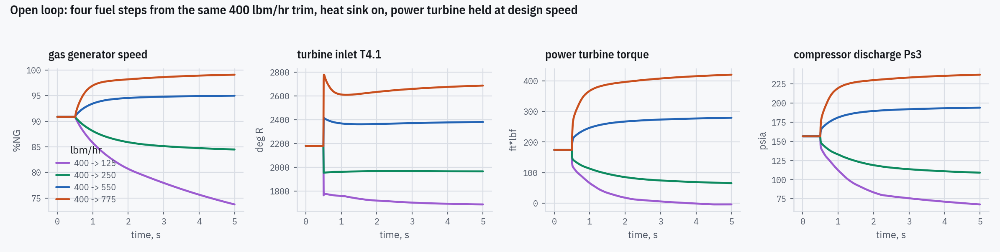
| Step, lbm/hr | NG start % | NG end % | T4.1 peak °R | T4.1 settled | overshoot |
|---|---|---|---|---|---|
| 400 → 125 | 90.86 | 73.73 | 2,180 | 1,687 | +493 |
| 400 → 250 | 90.86 | 84.48 | 2,180 | 1,965 | +215 |
| 400 → 550 | 90.86 | 95.01 | 2,414 | 2,381 | +33 |
| 400 → 775 | 90.86 | 99.10 | 2,778 | 2,688 | +91 |
Appendix C specifies the complete T700 fuel control and contains no equations: one constants table, twenty-two block diagrams and eight function plots. Every signal path was traced off the page raster at 300–600 dpi, summing junction by summing junction, because a misread sign inverts the control and still produces plausible numbers.
The primary loop. Governs gas generator speed on a droop line, applies the idle, acceleration and deceleration limits, and meters fuel. It runs alone if the electrical trim is null. Figures C9–C22.
Governs power turbine speed and limits T4.5. Its
entire authority is one voltage, SPDG, driving a torque motor that trims the
HMU’s droop line downward. Figures C1–C8.
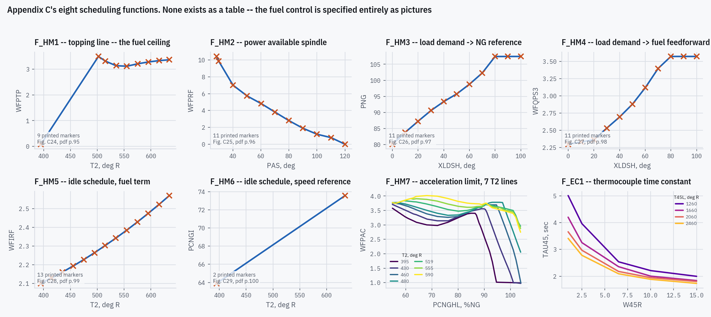
F_HM7
and F_EC1 are two-dimensional, and their curves converge and overprint, so they
are traced column by column and identified by rank rather than by reading a
10 px digit off the scan.| Function | Source | Extracted | What it does |
|---|---|---|---|
| F_HM1 | Fig. C24, pdf p.95 | 9 markers | Topping line. The fuel ceiling, a function of inlet temperature alone. |
| F_HM2 | Fig. C25, pdf p.96 | 11 markers | Power available spindle — the cockpit power lever, subtracted from the ceiling. |
| F_HM3 | Fig. C26, pdf p.97 | 11 markers | Collective pitch to the gas generator speed reference. |
| F_HM4 | Fig. C27, pdf p.98 | 11 markers | Collective pitch to the fuel feedforward. The load-demand anticipation. |
| F_HM5 | Fig. C28, pdf p.99 | 13 markers | Idle schedule, fuel term. Active only deep sub-idle. |
| F_HM6 | Fig. C29, pdf p.100 | 2 markers | Idle schedule, speed reference. Two printed markers define a straight line. |
| F_HM7 | Fig. C30, pdf p.101 | 7 lines | Acceleration limit. Two-dimensional: seven inlet-temperature lines. |
| F_EC1 | Fig. C23, pdf p.94 | 4 lines | Thermocouple time constant — itself a lookup, four T4.5 lines. |
The report’s closed-loop figures need the Gen Hel helicopter simulation (§8), so there is no closed-loop trace to overlay. The check that is available is a genuine cross-check: the engine comes from the report’s body and Appendix A, the control from Appendix C, and neither half knows the other exists. Hold the printed shaft torque, set the speed reference, and the closed loop must find Table B.1’s printed state with fuel flow as an output. It does, to 0.25 % worst over NG, NP, Wf, Ps3 and shaft power at three trims.
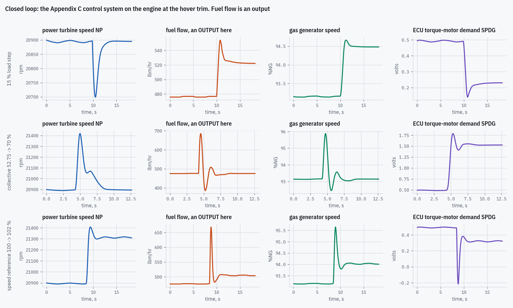
| Manoeuvre | NP range, rpm | NP settled | Wf range, lbm/hr | Wf settled | limit branch used |
|---|---|---|---|---|---|
| 15 % load step | 20,700 – 20,900 | 20,896 | 476 – 554 | 522 | droop |
| collective 52.75 -> 70 % | 20,891 – 21,415 | 20,896 | 388 – 684 | 476 | droop |
| speed reference 100 -> 102 % | 20,891 – 21,408 | 21,314 | 476 – 670 | 504 | droop |
The NG speed sensor’s printed 0.05 %NG hysteresis band sustains a limit cycle: NP oscillates 7.6 to 16.4 rpm peak to peak at the three trims and does not decay. Every closed-loop number quoted here is therefore a mean over whole cycles; a terminal sample would depend on where the run happens to stop.
The report supplies its function tables only as printed plots: eleven engine functions and eight control schedules, plus five body figures that carry the validation references. Recovering them is a measurement, and it is treated as one.
| Step | Method | The failure it prevents |
|---|---|---|
| Render | The figure pages are single 300 dpi 1‑bit
images, so extraction works on the embedded bitmap itself (pdfimages). |
Inventing sub-pixel detail the scan never had. |
| Calibrate | Frame detection, a tick lattice, then an axis polynomial through the interior ticks. Never by eye. | An error large enough to move every value and small enough to look plausible in the CSV. |
| Rectify | Page skew and keystone are a coordinate transform on the measured points; the pixels are never resampled. | Interpolation touching the data. A residual bow in the ink survives,
which is how f6’s apparent slope was caught. |
| Extract | Single curves: a generative model fitted to each printed glyph. Multi-curve figures: column-by-column tracing, curves identified by rank because they never cross. | Blob detection fails when markers sit on the joining line. |
| Verify | An overlay per figure, an independent marker count, and held-out checks: Figure A2’s markers are printed at the integers 1–20, and the extraction, never told so, recovers them. | Errors invisible in the CSV and obvious in the overlay. |
| Gate | Every digitizer reruns on demand and diffs against the committed file; a failed tool fails the verdict. | A gate that passes when every digitizer has crashed. |
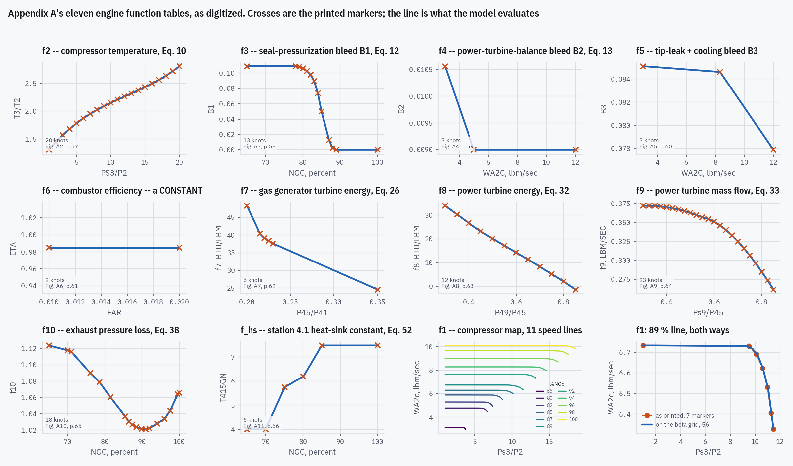
| Table | Source | Extracted | Printed abscissa | conditioning moved |
|---|---|---|---|---|
| f2 | Fig. A2, p.57 | 20 | PS3/P2 | 0 |
| f3 | Fig. A3, p.58 | 13 | NGC, percent | 1.8e-04 |
| f4 | Fig. A4, p.59 | 3 | WA2C, lbm/sec | 0 |
| f5 | Fig. A5, p.60 | 3 | WA2C, lbm/sec | 0 |
| f6 | Fig. A6, p.61 | 2 | FAR | 4.5e-06 |
| f7 | Fig. A7, p.62 | 6 | P45/P41 | 0 |
| f8 | Fig. A8, p.63 | 12 | P49/P45 | 0 |
| f9 | Fig. A9, p.64 | 23 | Ps9/P45 | 4.5e-05 |
| f10 | Fig. A10, p.65 | 18 | NGC, percent | 0 |
| f_hs | Fig. A11, p.66 | 6 | NGC, percent | 0 |
| f1 | Fig. A1, p.56 | 11 lines × 56 | 11 speed lines, beta grid | — |
Some of these functions have physics that must hold
exactly: a bleed fraction that reaches zero must be zero, a monotone ratio must not
wobble. Conditioning enforces that on load. The last column is how far it moved any value,
bounded at a few times that map’s own read error
(test_maps.CONDITIONING_TOL_SIGMA): past that the fix belongs at the figure. The
CSVs are never edited; they carry the ink as measured.
Figures 9 and 10 each contain one panel whose true value is printed: the fuel flow is the input, with both levels in the caption. Digitizing it measures the read error directly. It is a fixed fraction of each panel’s span, not of the value — a pixel offset — which is why the transient tolerances are a percent of full scale.
Where the report is silent, or reproducing it literally produces something demonstrably wrong, a decision was needed. Each is listed with what it costs: a departure nobody can measure will be undone by accident.
| Decision | What the report says | What we do, and what it costs |
|---|---|---|
| Station 4.1 heat sink Eqs. 48–53 | Prints both configurations and says which figures use which. Eqs. 48–49 are the metal energy balance; Eq. 50 is the lead–lag they collapse into. | A switch, so either published configuration runs. Built on Eqs. 48–49, not Eq. 50: the collapse holds only for constant coefficients, and Eqs. 51 and 53 vary with T41 and W41, so a lead–lag memory goes stale on a fuel step. |
| The two heat-sink time constants τ₁, τ₂ in Eq. 63 | Not printed anywhere, and trim-dependent by definition. | Recovered from Appendix B’s own 3‑DOF blocks. They imply a TC_T41
larger than the printed 0.29 [pdf p.55]
(test_heat_sink_taus.IMPLIED_TC_T41): Appendix B was generated with a
different constant. We keep the printed one, which is why our 6‑DOF fuel column
runs low (§6.3). |
| Opened compressor iteration Eq. 74 | Reads two ways: the printed equation lags only the bleed; the prose lags the whole flow leaving the compressor. | Both selectable; the prose reading ships. They converge to the same trim and differ only while a transient is under way, by a few tenths of a percent of speed at most. |
| Power turbine pressure solve Eq. 80 | “…because it is a nonlinear function of its own value, iterative techniques must be used” [pdf p.37]. | The printed fixed-point iteration runs first. Where the mass-flow table’s elasticity is below −1, most of a chop, it does not converge, and the same equation is solved exactly instead: with u = Ps9/P45 it is a piecewise-linear function against a line through the origin, so the root is unique and one divide away. |
| Compressor map interpolation f1, Figure A1 | Seven markers per speed line and no interpolation scheme stated. | A departure, still open (#60). Interpolated at constant beta, the fraction of each speed line’s own pressure-ratio span, rather than at constant abscissa, which on the Figure 10 chop reads the 65 % line far past its last knot. Against the printed table it wins on some printed surfaces and loses on others, so the scores do not decide it. Kept because a scheme that invents extrapolation is wrong whatever it scores. |
| Speed above the compressor map f1, Figure A1 | The top speed line is 100 % NGC [pdf p.56], and “the maximum gas generator speed for which the model is valid is 100 percent” [pdf p.39]. | A departure, closed by decision (#77). f1 extends its top two lines a tenth of a point past 100 % before it clamps; no other table does. Ballin’s own Figure 6 line ends on that top line, at a fuel flow where ours has just reached it, so without the allowance the top points of Figures 6–8 could not be compared. Nothing else moves: every other model output is bit-identical. |
| Combustor efficiency f6, Figure A6 | A curve with a visible slope, and no numeric table. | A departure, and immaterial. Loaded as a constant: the digitized glyphs fit a horizontal line well inside the ink width, and the page’s frame edges sit at four different angles, so the slope was the paper. The digitized slope would leave every printed comparison unchanged to four significant figures. |
| Limited integrators Figs. C3, C7, C10 | All three draw an unlimited 1/s followed by a separate
saturation block — a topology that winds up. |
A departure, closed by decision (#59). We clamp the state, which does not wind up. The two agree on every surface the report prints and separate only under a sustained load dump, where the drawn windup overspeeds NP beyond anything printed. |
| Jacobian perturbation step | “plus or minus two percent of equilibruim [sic] conditions” [pdf p.28] — an amplitude, matched to the rotor speed deviations of real helicopters. | The report’s ±2 %, adopted (#56): a finite secant, which is what Ballin’s matrices are, and better than an infinitesimal step on Table 1 and Appendix B. The cost: Eq. 18’s square root makes the secant differ from the tangent in the pressure equations, so tests about local slopes use the tangent. |
| Hysteresis band convention | Three control blocks carry backlash and each names a constant. None says whether it is the whole band or the half band. | The total band, closed by decision (#54). Reading it the other way moves the settled state very little and no conclusion turns on it, though it changes the limit-cycle amplitude of §3. |
Ballin’s model underestimates turbine temperature at trim in every validation case, and he says so. Reproducing that bias with the same sign is correct; matching the hardware better would be a worse replication. The same holds for his other admitted limits — the 100 %NG ceiling, direction-independent heat-sink constants, no T4.5 heat sink, damping slightly high, load-demand compensation weaker than the real aircraft.
| Comparison | rms % | mean % | worst % | |
|---|---|---|---|---|
| Table B.1, the printed engine state21 numbers | 0.222 | -0.087 | -0.806 | worst SHP −0.81 % at descent |
| Table 1, printed eigenvalues27 modes | 1.937 | 0.558 | 4.701 | worst +4.7 % on the 2-DOF NG mode at hover |
| Appendix B, matrix A158 non-zero | 6.262 | -0.354 | -33.749 | every non-zero printed element, all twelve figures |
| Appendix B, fuel column b42 non-zero | 6.405 | -1.330 | 24.299 | the 6-DOF half carries the heat sink's deficit |
| Closed loop against Table B.115 numbers | 0.081 | 0.020 | 0.245 | fuel flow is an output here, not an input |
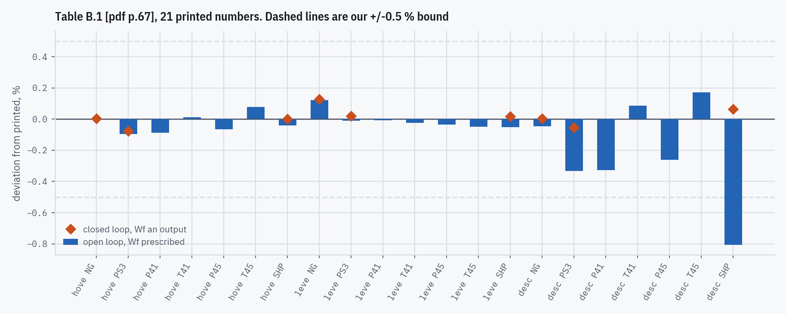
| Trim | Quantity | printed | ours | deviation % |
|---|---|---|---|---|
| hover | NG | 41,638.00 | 41,638.16 | +0.000 |
| hover | PS3 | 176.34 | 176.18 | -0.089 |
| hover | P41 | 174.28 | 174.14 | -0.081 |
| hover | T41 | 2,292.00 | 2,292.16 | +0.007 |
| hover | P45 | 37.42 | 37.40 | -0.061 |
| hover | T45 | 1,632.00 | 1,633.12 | +0.069 |
| hover | SHP | 911.10 | 910.55 | -0.060 |
| level 80 kt | NG | 39,768.00 | 39,815.75 | +0.120 |
| level 80 kt | PS3 | 142.13 | 142.11 | -0.013 |
| level 80 kt | P41 | 140.26 | 140.24 | -0.011 |
| level 80 kt | T41 | 2,102.00 | 2,101.50 | -0.024 |
| level 80 kt | P45 | 30.66 | 30.65 | -0.039 |
| level 80 kt | T45 | 1,501.00 | 1,500.27 | -0.049 |
| level 80 kt | SHP | 552.60 | 552.17 | -0.077 |
| descent 80 kt | NG | 38,072.00 | 38,053.89 | -0.048 |
| descent 80 kt | PS3 | 114.27 | 113.88 | -0.338 |
| descent 80 kt | P41 | 112.77 | 112.40 | -0.331 |
| descent 80 kt | T41 | 1,982.00 | 1,983.73 | +0.087 |
| descent 80 kt | P45 | 25.54 | 25.47 | -0.265 |
| descent 80 kt | T45 | 1,424.00 | 1,426.45 | +0.172 |
| descent 80 kt | SHP | 302.60 | 300.16 | -0.806 |
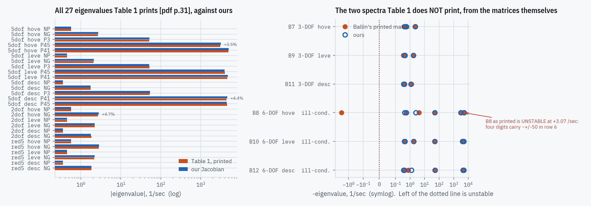
| Model | Trim | Mode | printed 1/s | ours 1/s | deviation % |
|---|---|---|---|---|---|
| 5-DOF | hover | NP | -0.565 | -0.565 | +0.01 |
| 5-DOF | hover | NG | -2.66 | -2.691 | +1.18 |
| 5-DOF | hover | P3 | -51.6 | -51.7 | +0.19 |
| 5-DOF | hover | P45 | -3,060 | -3,166 | +3.47 |
| 5-DOF | hover | P41 | -4,900 | -5,007 | +2.18 |
| 5-DOF | level 80 kt | NP | -0.446 | -0.4461 | +0.03 |
| 5-DOF | level 80 kt | NG | -2.08 | -2.111 | +1.51 |
| 5-DOF | level 80 kt | P3 | -52.2 | -50.97 | -2.35 |
| 5-DOF | level 80 kt | P45 | -4,040 | -3,948 | -2.28 |
| 5-DOF | level 80 kt | P41 | -4,640 | -4,736 | +2.08 |
| 5-DOF | descent 80 kt | NP | -0.357 | -0.3567 | -0.09 |
| 5-DOF | descent 80 kt | NG | -1.75 | -1.755 | +0.28 |
| 5-DOF | descent 80 kt | P3 | -52.6 | -53.56 | +1.83 |
| 5-DOF | descent 80 kt | P41 | -4,430 | -4,624 | +4.38 |
| 5-DOF | descent 80 kt | P45 | -4,530 | -4,445 | -1.87 |
| 2-DOF | hover | NP | -0.565 | -0.565 | +0.01 |
| 2-DOF | hover | NG | -2.69 | -2.816 | +4.70 |
| 2-DOF | level 80 kt | NP | -0.446 | -0.4461 | +0.03 |
| 2-DOF | level 80 kt | NG | -2.23 | -2.202 | -1.27 |
| 2-DOF | descent 80 kt | NP | -0.357 | -0.3567 | -0.09 |
| 2-DOF | descent 80 kt | NG | -1.82 | -1.768 | -2.85 |
| reduced-5 | hover | NP | -0.565 | -0.565 | +0.01 |
| reduced-5 | hover | NG | -2.81 | -2.861 | +1.82 |
| reduced-5 | level 80 kt | NP | -0.446 | -0.4461 | +0.03 |
| reduced-5 | level 80 kt | NG | -2.16 | -2.206 | +2.11 |
| reduced-5 | descent 80 kt | NP | -0.357 | -0.3567 | -0.09 |
| reduced-5 | descent 80 kt | NG | -1.83 | -1.833 | +0.14 |
Row 6 of the 6‑DOF A differences terms of order
2×105 to produce order 103, so four printed significant figures
carry roughly ±50 there. As printed, B8 is open-loop unstable at
+3.07 /sec: precision lost in
the printing, not a claim the report makes. The 6‑DOF figures are compared element by
element instead.
| Figure | Model | Trim | Ballin’s matrix, 1/s | ours, 1/s | |
|---|---|---|---|---|---|
| B7 | 3-DOF | hover | -0.378, -0.565, -2.229 | -0.4237, -0.565, -2.3 | |
| B9 | 3-DOF | level 80 kt | -0.3535, -0.4461, -1.814 | -0.4074, -0.4461, -1.715 | |
| B11 | 3-DOF | descent 80 kt | -0.3567, -0.3577, -1.267 | -0.3567, -0.4184, -1.169 | |
| B8 | 6-DOF | hover | 3.067, -0.565, -4.132, -50.88, -3,062, -5,251 | -0.4304, -0.565, -2.537, -50.5, -3,166, -5,312 | UNSTABLE as printed · ill-conditioned |
| B10 | 6-DOF | level 80 kt | -0.4461, -1.844, -1.844, -48.39, -4,038, -4,985 | -0.4155, -0.4461, -1.778, -49.78, -3,948, -5,044 | · ill-conditioned |
| B12 | 6-DOF | descent 80 kt | -0.3567, -0.7554, -0.7554, -50.47, -4,431, -4,875 | -0.3567, -0.419, -1.277, -52.38, -4,445, -4,947 | · ill-conditioned |
The strongest test in the project: the linearized model term by term against printed numbers, with no digitization and no read error. A structural error in any component equation shows up as a wrong element pointing at the offending partial derivative.
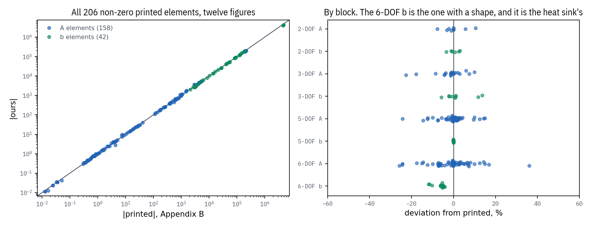
| Block | n | mean % | rms % | worst % |
|---|---|---|---|---|
| 2-DOF A | 9 | 0.39 | 3.16 | -4.68 |
| 2-DOF b | 6 | 0.24 | 2.02 | -2.94 |
| 3-DOF A | 21 | -2.29 | 8.75 | -33.00 |
| 3-DOF b | 9 | 2.73 | 11.77 | +24.30 |
| 5-DOF A | 54 | -0.09 | 4.91 | +15.66 |
| 5-DOF b | 12 | -0.02 | 0.07 | -0.13 |
| 6-DOF A | 74 | -0.08 | 6.57 | -33.75 |
| 6-DOF b | 15 | -5.44 | 5.48 | -6.44 |
The 5‑DOF b matches to
0.07 % rms. Turn the station‑4.1 heat sink on and
the same column runs uniformly low: -5.4 % on average,
-6.4 % at worst. The heat sink is the only difference
between the two models, so the deficit is its time constants (§5): with the ones
Appendix B implies, the column matches within
test_heat_sink_taus.SIX_DOF_SWAP_TOL_PCT.
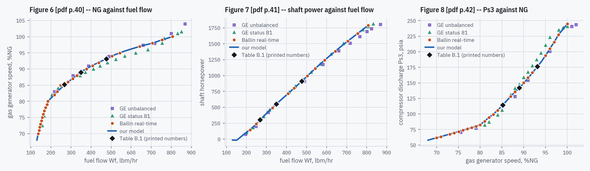
| Figure | Points scored | mean | rms | worst |
|---|---|---|---|---|
| Figure 6NG against fuel flow. Deviation in %NG points, not percent — an absolute difference on a speed already expressed as a percentage. | 29 of 29 | -0.008 | 0.231 | -1.018 %NG |
| Figure 7Shaft power against fuel flow. The low-power end is the worst, and it is the same end where Table B.1 and this figure disagree with each other by 1.3 %. | 15 of 15 | 0.177 | 0.664 | +2.175 % |
| Figure 8Ps3 against NG. No fuel flow appears in it, so it cannot be rescued by a compensating fuel-path error. | 27 of 27 | 0.066 | 0.261 | +0.643 % |
Table B.1 and Figures 6–7 describe the same three operating points. Table B.1 is primary — no digitizing error of ours, and Appendix B and Table 1 come from the same trims — and it is drawn as the diamonds above.
| Trim | Wf, lbm/hr | Table B.1 vs the figure | ours vs Table B.1 | nearest printed marker |
|---|---|---|---|---|
| hover | 476.3 | -0.028 % | -0.060 % | 5.0 lbm/hr |
| level 80 kt | 349.3 | +0.148 % | -0.077 % | 0.6 lbm/hr |
| descent 80 kt | 267.7 | +1.329 % | -0.806 % | 2.7 lbm/hr |
The report’s widest self-disagreement is 1.329 %. A row is set in bold where our error is the larger of the two. Read the last column before quoting a row: Figure 7 prints fifteen markers over its whole range, and on its steep low-power end the curve climbs about 3 shp per lbm/hr.
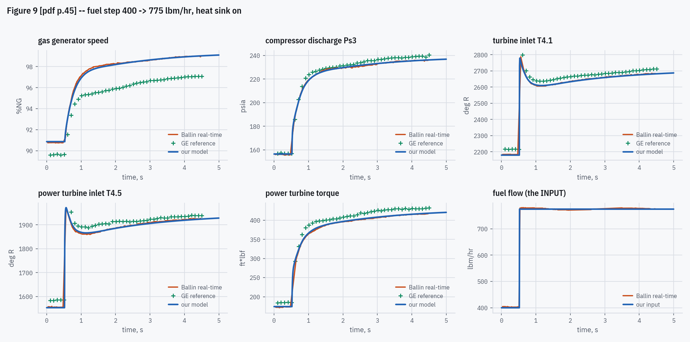
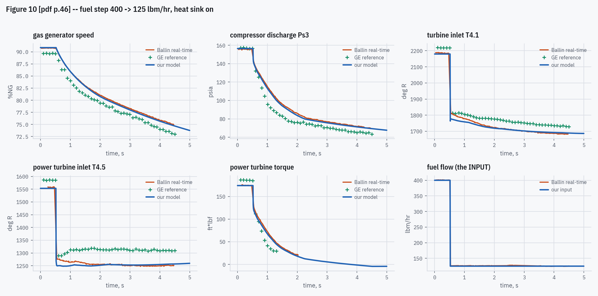
| Figure | Panel | Ballin | ours | deviation % | record ends |
|---|---|---|---|---|---|
| Fig 9 | PCNG | 98.98 | 98.97 | -0.006 | 4.471 s |
| Fig 9 | PS3 | 235.72 | 235.79 | +0.028 | 4.471 s |
| Fig 9 | T41 | 2,682.03 | 2,679.02 | -0.112 | 4.474 s |
| Fig 9 | T45 | 1,924.37 | 1,921.31 | -0.159 | 4.471 s |
| Fig 9 | TORQ45 | 415.98 | 416.60 | +0.151 | 4.471 s |
| Fig 10 | PCNG | 75.44 | 75.20 | -0.309 | 4.467 s |
| Fig 10 | PS3 | 70.83 | 70.38 | -0.635 | 4.465 s |
| Fig 10 | T41 | 1,684.02 | 1,691.05 | +0.417 | 4.471 s |
| Fig 10 | T45 | 1,250.60 | 1,256.02 | +0.434 | 4.468 s |
| Panel | rms % | against the 4 % ratchet |
|---|---|---|
| Fig 9 · torq45 | 0.617 | |
| Fig 9 · t41 | 0.673 | |
| Fig 9 · ps3 | 0.715 | |
| Fig 9 · t45 | 0.817 | |
| Fig 9 · pcng | 1.426 | |
| Fig 10 · pcng | 1.436 | |
| Fig 10 · ps3 | 1.677 | |
| Fig 10 · torq45 | 2.388 | |
| Fig 10 · t45 | 2.899 | |
| Fig 10 · t41 | 3.797 |
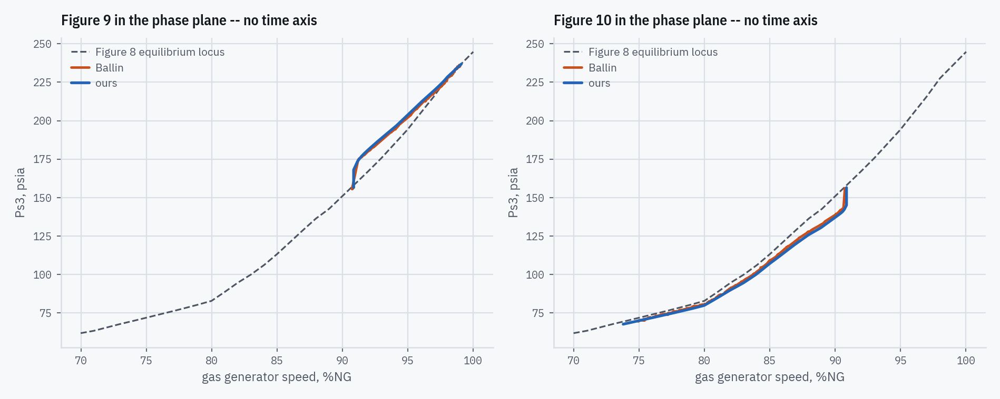
The report’s frame was at most 10 ms [pdf p.38]. The replication is not a real-time deliverable, but frame cost governs how much validation can be run. On a laptop an engine frame costs tens of microseconds, two orders of magnitude inside that budget, and the closed loop with both control units stays well inside it too. Most of the time was in the function-table lookups, not the iterations. Every change below was held to no new dependency and no accuracy loss.
| Change | How accuracy was held |
|---|---|
| A scalar path for table lookup | Every call site asks for one abscissa. The scalar path reproduces NumPy’s interpolation rather than approximating it: checked at every knot, every midpoint, random interior points and outside both ends of every shipped curve, with zero bit-mismatches. |
| Loop invariants out of the Gauss–Seidel sweep | The report counts “eleven arithmetic operations required for each pass” [pdf p.37], which leaves no room to recompute the two invariants every pass. Hoisted, with the printed expressions’ association preserved. |
| Eq. 80 solved exactly | The one change that is not bit-identical. It acts only where the printed iteration fails to converge (§5), and there it moves the result far below any tolerance. |
Figures 11–15 run the engine inside the Gen Hel UH‑60A blade-element helicopter simulation, which the report consumes and does not contain. They are out of scope by construction: the rotor model is an external supplier to the report exactly as it is to us.
Table 3 looks like the best steady-state benchmark, but its model column used the NASA‑Lewis prototype engine’s compressor and turbine functions, printed nowhere, and its own caption says it does not represent specification T700 performance: evidence of method, never pass/fail.
Two Gen Hel derivatives — the load-torque slope and the load inertia — are recovered from Appendix B itself rather than modelled, so the power turbine row of every linear comparison is supplied rather than predicted.
Above 100 %NG nothing is claimed. That ceiling is Ballin’s, stated in his own validation section, and a replication inherits it.
Anything the report does not answer goes into a ledger,
docs/notes/open-questions.md, rather than into the code as a guess. These are the
rows not yet closed. None blocks a result; each says what it is and which numbers in
§6 it sits under.
| Row | Verdict | Question | Where it stands |
|---|---|---|---|
| #60 | open | f1 on a beta grid, not the printed table | A deliberate departure, kept by decision (§5). It removes a manufactured extrapolation entirely; against the printed table it wins on some printed surfaces and loses on others. It sits under every number in §6, through the compressor map. |
| #74 | open | Figure A1’s speed lines do not form a smooth family | No smooth surface fits all eleven digitized lines within their quoted read error, and adjacent lines disagree well beyond it. Either our read error understates the error across lines, or the printed figure is not internally consistent. It sits under every number in §6, through the compressor map. |